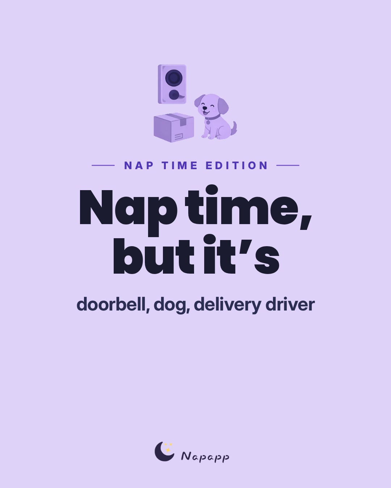
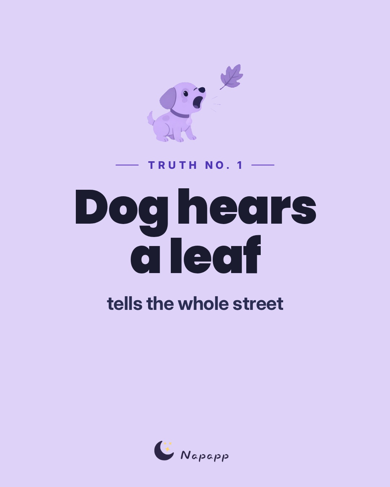
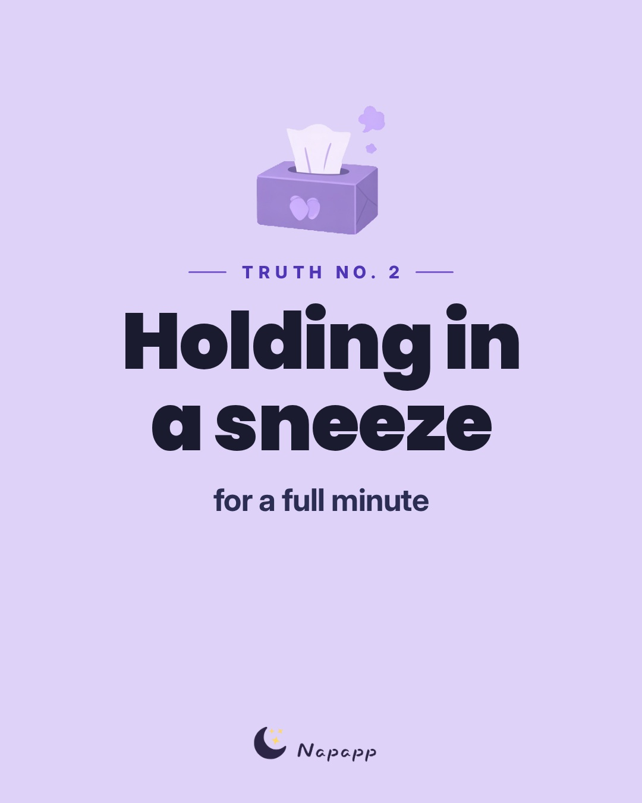
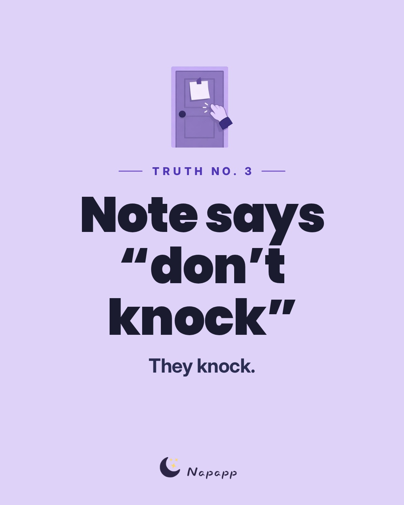
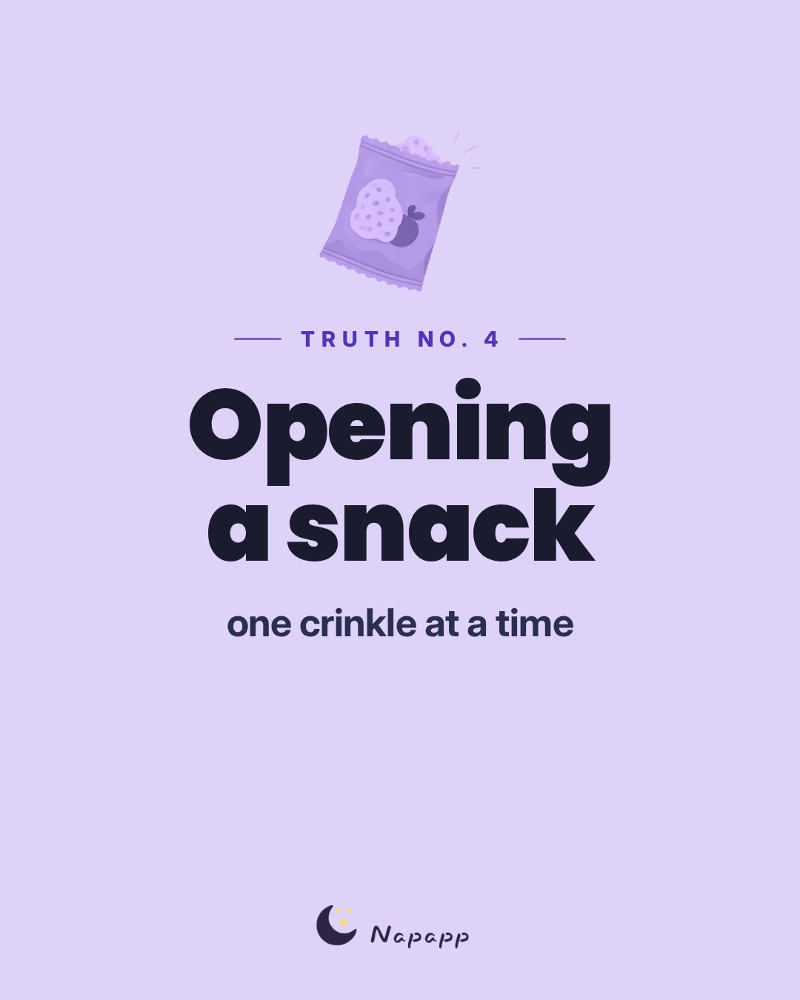
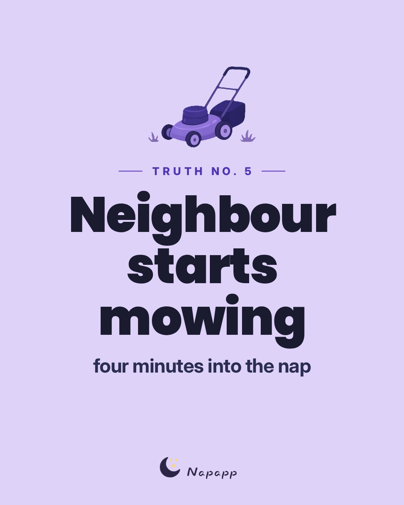
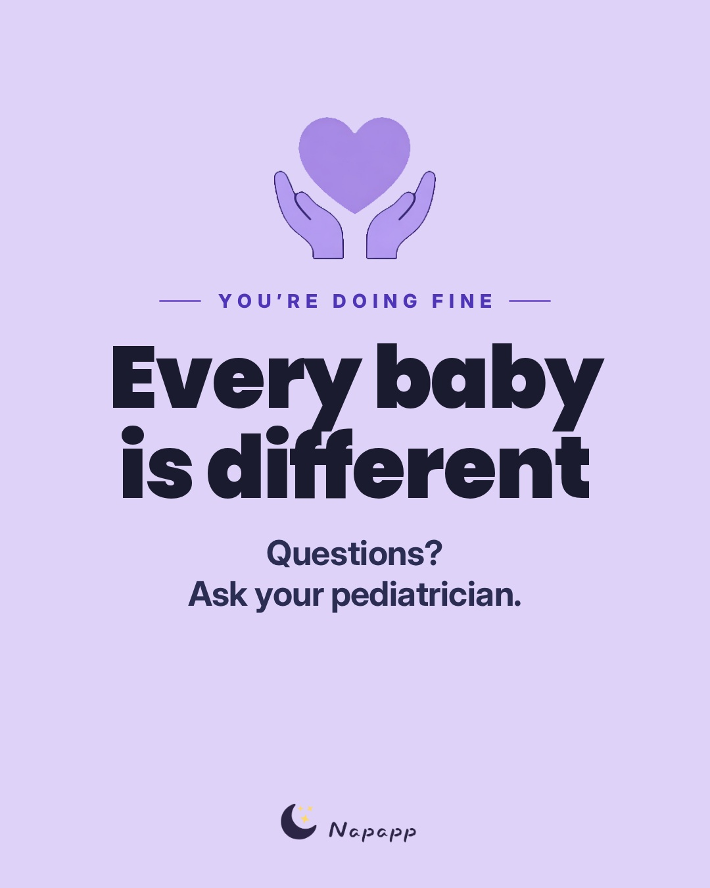
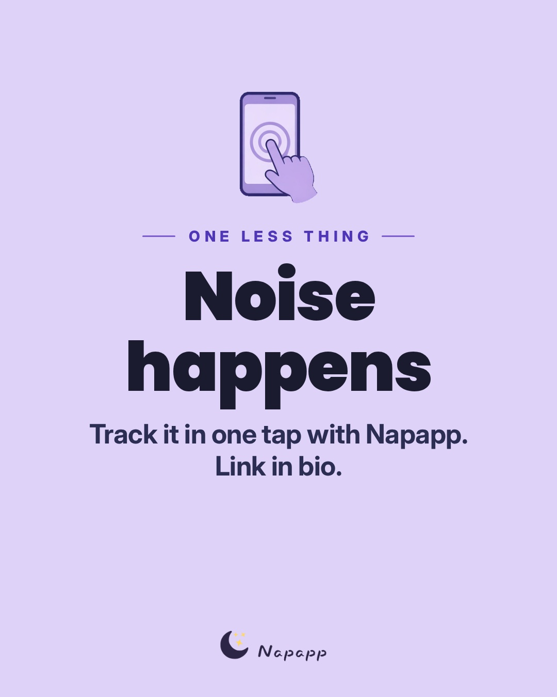

Sound
Instagram (@getnapapp)
How to post on Instagram: Post from the Instagram app (not Meta Business Suite). Open the song's audio link on your phone and tap 'Use audio'. Don't boost (or tag as a paid partnership) a Reel that uses a licensed song.
Notes for this post: TikTok + IG/FB carousel Tue Nov 10 8:00 PM ET (needs approval). Relatable-list v2 ('every noise during nap time'). NEW REFRESH Nov 3, 9:20 AM ET: first picks for this post. Carousels can't take baked-in audio, so on IG/FB use a picker song or a 'Royalty-free' Sound Collection track (or post silent). Same playful mood as relatable-list-test. Confirm every TikTok sound in the Commercial Music Library on the business account; on IG open the audio link and tap 'Use audio' in the Instagram app, not Business Suite. Don't boost a post with a licensed song. Sounds are added in the app. Re-check picks on later refreshes as the date gets closer (SocialPilot's IG list only runs to Nov 10). REFRESH Nov 4, 9:20 AM ET: no pick changes. TikTok: Octohog's chart was refreshing and unreadable; Kabo's Nov 4 board has Coming Up Roses up to #9, and Sick Beat and Ain't Nobody Else Like You outside its top 20, so treat those two as calm fits rather than trend plays. IG: Salvatore still 'rising fast' on Tracygram's Nov 4 Global chart (#10); SocialPilot's Oct 31-Nov 10 list unchanged. Christmas sounds still held back. REFRESH Nov 5, 9:20 AM ET: meaningful prune. TikTok: Octohog public chart still refreshing/unreadable (same as Nov 3–4); Kabo's Nov 5 board (snapshot 00:10 UTC) has Coming Up Roses at #10 and does NOT list The Only Exception, Sick Beat, or Ain't Nobody Else Like You in its top 20 — drop The Only Exception (its own why said 'only if still charting by Nov 5'); keep Sick Beat / Cass Elliot as calm/uncrowded cleared fits pending a readable Octohog board. IG: Salvatore left Tracygram's Nov 5 Global top 10 (was #10 rising on Nov 4) and is absent from today's Global list, so it is swapped out of window primaries; replacements are already-URL'd SocialPilot Oct 31–Nov 10 risers (Hold On #7 / CreatorDB week-of-Nov-4 #8; Sunshine #12; Linger #11; Everlong #10) with evidence re-checked Nov 5. Christmas sounds still held back for sleep posts.
Notes for this post: TikTok + IG/FB carousel Tue Nov 10 8:00 PM ET (needs approval). Relatable-list v2 ('every noise during nap time'). NEW REFRESH Nov 3, 9:20 AM ET: first picks for this post. Carousels can't take baked-in audio, so on IG/FB use a picker song or a 'Royalty-free' Sound Collection track (or post silent). Same playful mood as relatable-list-test. Confirm every TikTok sound in the Commercial Music Library on the business account; on IG open the audio link and tap 'Use audio' in the Instagram app, not Business Suite. Don't boost a post with a licensed song. Sounds are added in the app. Re-check picks on later refreshes as the date gets closer (SocialPilot's IG list only runs to Nov 10). REFRESH Nov 4, 9:20 AM ET: no pick changes. TikTok: Octohog's chart was refreshing and unreadable; Kabo's Nov 4 board has Coming Up Roses up to #9, and Sick Beat and Ain't Nobody Else Like You outside its top 20, so treat those two as calm fits rather than trend plays. IG: Salvatore still 'rising fast' on Tracygram's Nov 4 Global chart (#10); SocialPilot's Oct 31-Nov 10 list unchanged. Christmas sounds still held back. REFRESH Nov 5, 9:20 AM ET: meaningful prune. TikTok: Octohog public chart still refreshing/unreadable (same as Nov 3–4); Kabo's Nov 5 board (snapshot 00:10 UTC) has Coming Up Roses at #10 and does NOT list The Only Exception, Sick Beat, or Ain't Nobody Else Like You in its top 20 — drop The Only Exception (its own why said 'only if still charting by Nov 5'); keep Sick Beat / Cass Elliot as calm/uncrowded cleared fits pending a readable Octohog board. IG: Salvatore left Tracygram's Nov 5 Global top 10 (was #10 rising on Nov 4) and is absent from today's Global list, so it is swapped out of window primaries; replacements are already-URL'd SocialPilot Oct 31–Nov 10 risers (Hold On #7 / CreatorDB week-of-Nov-4 #8; Sunshine #12; Linger #11; Everlong #10) with evidence re-checked Nov 5. Christmas sounds still held back for sleep posts.
- Hold On, We're Going Home · Drake, Majid Jordan primaryRelatable comedy-skit sound for every-noise-during-nap-time listHow: Best: open https://www.instagram.com/reels/audio/435526946919130/ on the phone and tap 'Use audio' (exact track). Or in the Reels editor, Add audio and search 'Hold On, We're Going Home Drake', then pick the result whose artist is exactly 'Drake, Majid Jordan' (not a cover, sped-up version or 'original audio').Confidence: MEDIUM: trending on IG per SocialPilot + CreatorDB (official audio page link); availability on @getnapapp (Creator, Canada) is UNVERIFIED until it appears in the picker; lyrics/section not listened to
- Sunshine (Instrumental) · Twista backupNo-lyrics tip bed if Hold On is greyed outHow: Best: open https://www.instagram.com/reels/audio/2920100688130624/ on the phone and tap 'Use audio' (exact track). Or in the Reels editor, Add audio and search 'Sunshine (Instrumental) Twista', then pick the result whose artist is exactly 'Twista' (not a cover, sped-up version or 'original audio').Confidence: MEDIUM: trending on IG per the cited chart, and the audio page ID comes from that chart; availability on @getnapapp (Creator, Canada) is UNVERIFIED until it appears in the picker; lyrics/section not listened to
- Linger · The Cranberries backupSoft cozy alternativeHow: Best: open https://www.instagram.com/reels/audio/192068608180555/ on the phone and tap 'Use audio' (exact track). Or in the Reels editor, Add audio and search 'Linger The Cranberries', then pick the result whose artist is exactly 'The Cranberries' (not a cover, sped-up version or 'original audio').Trend: SocialPilot Oct 31 - Nov 10, 2026: #11, Rising, 117K reels, 'wistful, cozy' (re-checked Nov 5)Confidence: MEDIUM: trending on IG per the cited chart, and the audio page ID comes from that chart; availability on @getnapapp (Creator, Canada) is UNVERIFIED until it appears in the picker; lyrics/section not listened to
Instagram backup (royalty-free)
- When: Use this if none of the IG songs appear or they're greyed out: a 'Royalty-free' Sound Collection track (any account type), or bake in the CC0 track.
- Sound Collection ('Royalty-free'): In the Reels editor tap Add audio, type 'funny', and only pick a track tagged 'Royalty-free' (Meta's label for Sound Collection audio). Write the exact title and artist back here once you've picked one.
- CC0 track (baked in): Happy Sadie (Loyalty Freak Music), Not in the picker. Re-render with: reel/render_reel.py ... --track happy-sadie (music baked in, -16 LUFS), then upload with no in-app sound
Facebook Page
- Meta Sound Collection: first result labelled 'Royalty-free' for 'funny' (exact title not verifiable from public sources) · as listed in the picker (unverified) primaryLight, playful comedy bed for a tired-parent storyHow: In the Reels editor tap Add audio, type 'funny', and only pick a track tagged 'Royalty-free' (Meta's label for Sound Collection audio). Write the exact title and artist back here once you've picked one.Confidence: MEDIUM: Meta's docs confirm Sound Collection / 'Royalty-free' audio is usable by business accounts and Pages; no specific track verified (the catalogue needs a login, which isn't allowed)
- Meta Sound Collection: first result labelled 'Royalty-free' for 'quirky' (exact title not verifiable from public sources) · as listed in the picker (unverified) backupPlinky, cartoonish feel for gentle humour; avoid anything tense or spookyHow: In the Reels editor tap Add audio, type 'quirky', and only pick a track tagged 'Royalty-free' (Meta's label for Sound Collection audio). Write the exact title and artist back here once you've picked one.Confidence: MEDIUM: Meta's docs confirm Sound Collection / 'Royalty-free' audio is usable by business accounts and Pages; no specific track verified (the catalogue needs a login, which isn't allowed)
- Happy Sadie · Loyalty Freak Music backup (baked-in)Upbeat, cheerful bed for the comedic formatHow: Not in the picker. Re-render with: reel/render_reel.py ... --track happy-sadie (music baked in, -16 LUFS), then upload with no in-app soundLicence: CC0 1.0 (reel/music/manifest.json, sha256-checked)Confidence: HIGH for licence (CC0, commercial use OK, confirmed on archive.org + artist page); mood UNVERIFIED (nobody has listened yet); small risk of a false Content ID claim (artist FAQ)
TikTok picks
- Sick Beat · Kero Kero BonitoBright and playful for a 'that's so me' list; back on Kabo's board (#20) Nov 3 [Octohog: Cleared, Oct 30 11:41 PM ET]
- Coming Up Roses · Harry StylesTop cleared trend (Kabo #10 Nov 5 Nov 3), safe big-trend fallback [Octohog: Cleared, Oct 30 11:41 PM ET]
- Ain't Nobody Else Like You · Cass ElliotWarm and uncrowded if the list ends sweet [Octohog: Cleared, Oct 30 11:41 PM ET]
Picks as of Nov 5, 2026, 9:20 AM ET
Only use sounds cleared for business use: TikTok's Commercial sounds list; on the Facebook Page only Sound Collection tracks tagged 'Royalty-free' (or the baked-in CC0 track); on Instagram only the songs listed here, added via their audio link, or the royalty-free backup.
Happy with it? Go back to the calendar and tap Approve on this post.